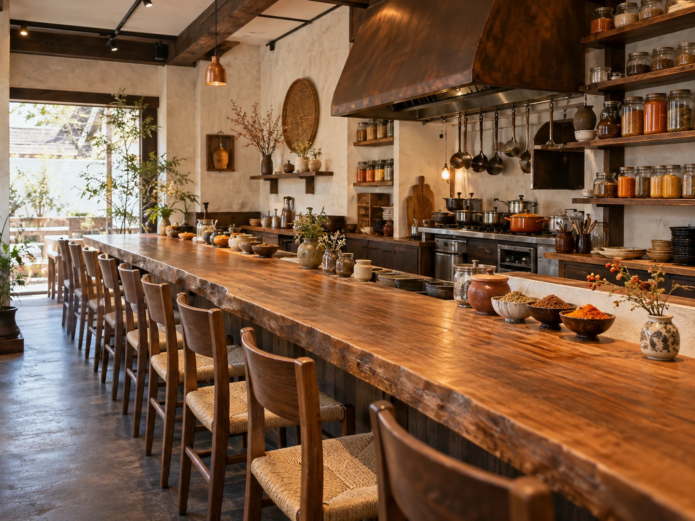

CONCEPT
焙煎する人が、
カレーもつくっています
niru cafe は、秋田市手形からみでんにあります。 カウンターだけの、10席のお店です。
コーヒーもカレーも、同じ人の手から
店主は、秋田市茨島の「麻布珈琲店」で7年間働いていた方です。コーヒーは自家焙煎。その同じ人が、スパイスカレーを組み立てています。
はじまりは、2022年3月のキッチンカー「ニルカー」でした。 秋田市山王の、知人のオフィスの敷地を借りて始められています。 子連れでは、辛いものやコーヒーをゆっくり味わうのが難しい。 だから、持ち帰れる形から始めたと紹介されています。
子供たちの目の届くところでお店を開きたい。 a.woman（2022年6月24日）に掲載された、店主の言葉より
その1か月後、仕込みに使っていた場所を直して、自宅の近くに店舗を開かれました。 キッチンカーが先で、お店があと。いまも、その両方が動いています。
